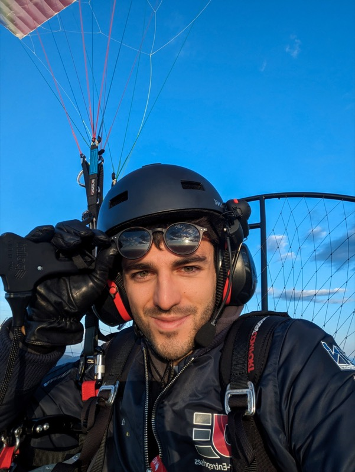

Due diligence en intelligence artificielle
AI Diligence
- 01Ingénierie IA & MLOps
- 02Audit de stack IA (due diligence)
- 03Pilotage d'équipes et de projets IA
Une évaluation technique complète de la stack IA d'une entreprise : viabilité du produit, intégrité des modèles, coûts d'exploitation, licences et passage à l'échelle.
Approche
Investir dans l'IA, sur des bases solides
L'IA dans l'innovation
Les technologies d'IA sont devenues un atout majeur des entreprises innovantes, en particulier dans une perspective d'investissement. La multiplication des acteurs interroge leur différenciation et leur compétitivité.
Due diligence technique
Nos services de due diligence IA offrent une évaluation complète des fondations technologiques d'une entreprise, en complément de la due diligence traditionnelle.
Expertise IA
Nous veillons à ce que votre investissement ne repose pas seulement sur un potentiel, mais sur une infrastructure technologique robuste. Nous formulons des recommandations technologiques précises.
Éclairages
Nos services vous apportent des éclairages concrets, pour des investissements et des choix technologiques alignés sur les standards actuels du secteur et ses évolutions à venir.
Due diligence · 8 axes
Les axes clés de notre due diligence IA
Huit angles d'évaluation, de la maturité du produit à l'économie des licences et à l'exposition réglementaire propre à chaque secteur.
Viabilité du produit
Le produit est-il prêt pour le marché, ou n'est-ce qu'une démo ? Peut-il être vendu en l'état, et quel est son potentiel de passage à l'échelle ?
Intégrité des modèles et des données
Examiner la robustesse des modèles, des sources de données et de la propriété intellectuelle. Évaluer la reproductibilité technique, au-delà des protections juridiques.
Pérennité et défendabilité de la technologie
Évaluer la viabilité de la technologie à long terme. Identifier les sources de données et situer les performances des modèles par rapport à l'état de l'art.
Équipe et expertise
Évaluer l'équilibre et la diversité de l'équipe, et sa dépendance à des personnes clés.
Mise en œuvre technique
Examiner la qualité du code, la conteneurisation et la couverture de tests. S'assurer de la documentation, du versionnement et de la pérennité.
Licences et passage à l'échelle
Évaluer le modèle de licence de la technologie. Projeter l'évolution des coûts avec la croissance de l'activité.
Coûts et performances
Examiner les choix techniques et les latences évitables, challenger les architectures et les technologies, développées sur mesure ou sur étagère.
Spécificités sectorielles
Pour la santé, la souveraineté, les dispositifs médicaux et les autres secteurs réglementés, identifier les risques liés aux technologies de la stack — actuels et futurs, d'un point de vue technique.
Expertise · améliorer vos projets d'IA
Plus de notre expertise IA
Profitez de notre expérience pour améliorer :
- Coûts d'exploitation, cloud ou auto-hébergé
- Réactivité de l'inférence des modèles
- Qualité du code
- Efficacité des modèles
- Prompt engineering
- Benchmark de modèles
- Architecture des projets
- Passage à l'échelle
Et plus encore — contactez-nous pour une démonstration sur vos propres cas d'usage.

À propos · Fondateur
Paul Asquin
Fort d'une expérience de Head of AI en vision et en traitement du langage, de CTO de Guardia et de freelance en IA, je suis diplômé de Centrale Paris et titulaire de deux MSc : l'un en intelligence artificielle et informatique, l'autre en robotique.
J'ai créé AI Diligence en 2023 pour mettre à disposition mon expertise et mon réseau.
- Centrale Parisingénieur
- 2 MScIA & informatique · robotique
- Head of AIvision & langage
- CTOGuardia
Contact
Vous évaluez une stack IA ?
Contactez-moi et parlons du périmètre. Je réponds sur LinkedIn ou par e-mail.